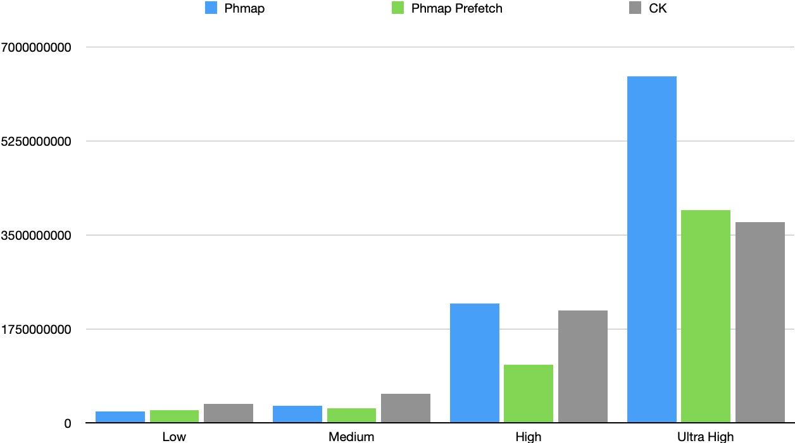
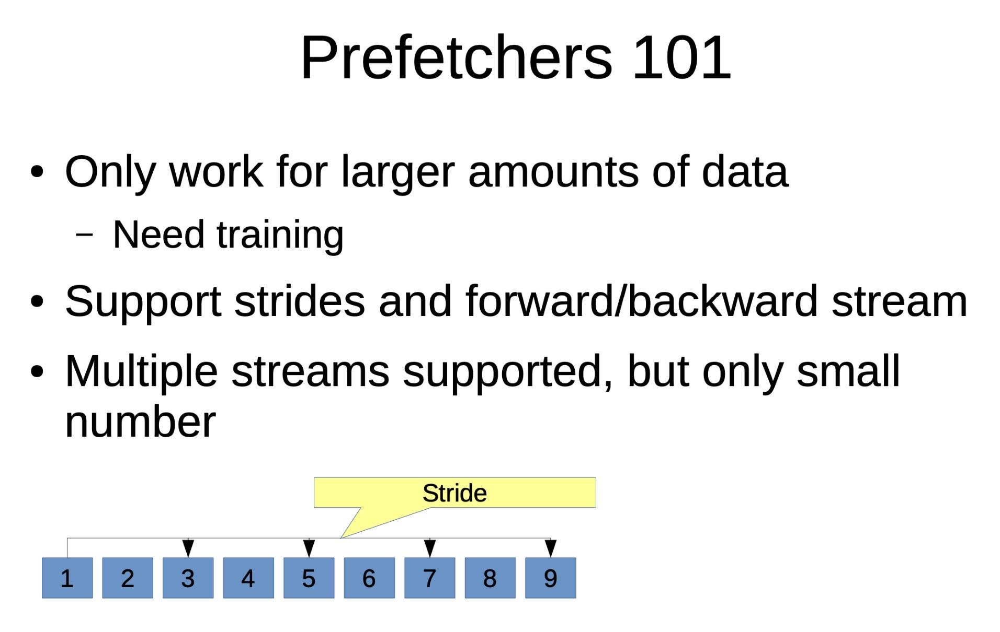
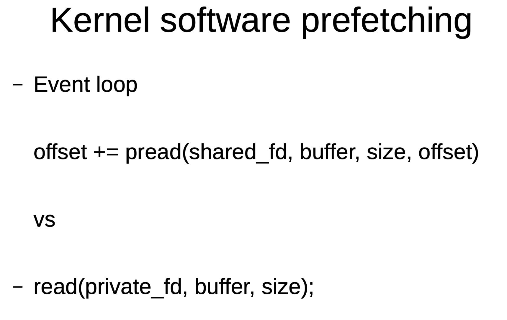

HashTable性能测试(CK/phmap/ska)
1. 测试准备
CK代码是从 https://github.com/ClickHouse/ClickHouse/commit/2805c28e6573fab09128b43150c4a7cb7ad21cc1 上面分离出来的，为了方便地单独编译做了下面这些处理：
- 去掉了Key=Slice的情况，因为这个涉及到Arena和内存管理等东西
- 去掉了许多可能出现Exception的情况，假设这些情况都不会出现
- 保留了Allocator这段逻辑，CK在内存分配上有不少tricks可以学习
ska::flat_hash_map 源代码地址是在这里 https://github.com/skarupke/flat_hash_map/blob/master/flat_hash_map.hpp
全部代码放在附件里面，测试代码放在文章最后，测试用例是这样的：
单机单线程，插入 65536000 行，然后基数情况如下，都是插入随机数
- [A] 960，低基数
- [B] 96000，中基数
- [C] 9600000，高基数
- [D] 960000000，超高基数
其中
- run_insert_random 表示phmap
- run_insert_random_ska 表示ska hashmap
- run_insert_precompute 表示phmap 预先计算hashvalue+prefetch
- run_insert_random_ck 表示CK
----------------------------------------------------------------------------------- Benchmark Time CPU Iterations ----------------------------------------------------------------------------------- run_insert_random/65536000/960 219113702 ns 219081575 ns 3 run_insert_random_ska/65536000/960 304808498 ns 304779963 ns 2 run_insert_precompute/65536000/960 234825202 ns 234803423 ns 3 run_insert_random_ck/65536000/960 350274672 ns 350239037 ns 2 run_insert_random/65536000/96000 322532514 ns 322502376 ns 2 run_insert_random_ska/65536000/96000 906551339 ns 906459594 ns 1 run_insert_precompute/65536000/96000 270961498 ns 270920370 ns 3 run_insert_random_ck/65536000/96000 544284025 ns 544221843 ns 1 run_insert_random/65536000/9600000 2223202526 ns 2222753516 ns 1 run_insert_random_ska/65536000/9600000 2044231505 ns 2044013964 ns 1 run_insert_precompute/65536000/9600000 1086953992 ns 1086852808 ns 1 run_insert_random_ck/65536000/9600000 2099581536 ns 2099340097 ns 1 run_insert_random/65536000/960000000 6454115631 ns 6453461530 ns 1 run_insert_random_ska/65536000/960000000 6683883384 ns 6682989324 ns 1 run_insert_precompute/65536000/960000000 3963008998 ns 3962379163 ns 1 run_insert_random_ck/65536000/960000000 3743974165 ns 3743242838 ns 1
2. 低基数
时间上看：
- phmap性能是最好的
- 预取会略微有点负作用
- CK效果并不好，可能CK针对低基数有优化
空间上看，CK有点低
run_insert_random/65536000/960 219113702 ns 219081575 ns 3 run_insert_random_ska/65536000/960 304808498 ns 304779963 ns 2 run_insert_precompute/65536000/960 234825202 ns 234803423 ns 3 run_insert_random_ck/65536000/960 350274672 ns 350239037 ns 2 run_insert_random: hash set size = 960, load factor = 0.468979 run_insert_random_ska: hash set size = 960, load factor = 0.46875 run_insert_precompute: hash set size = 960, load factor = 0.468979 run_insert_random_ck: hash set size = 960, load factor = 0.234375
| Hash Table | Time |
|---|---|
| phmap | 219113702 |
| ska | 304808498 |
| prefetch | 234825202 |
| ck | 350274672 |
3. 中基数
时间上看：
- phmap依然是最好的
- prefetch开始有效果
- ska比较差
空间上看, ck/ska都比较低
run_insert_random/65536000/96000 322532514 ns 322502376 ns 2 run_insert_random_ska/65536000/96000 906551339 ns 906459594 ns 1 run_insert_precompute/65536000/96000 270961498 ns 270920370 ns 3 run_insert_random_ck/65536000/96000 544284025 ns 544221843 ns 1 run_insert_random: hash set size = 96000, load factor = 0.732427 run_insert_random_ska: hash set size = 96000, load factor = 0.366211 run_insert_precompute: hash set size = 96000, load factor = 0.732427 run_insert_random_ck: hash set size = 96000, load factor = 0.366211
| Hash Table | Time |
|---|---|
| phmap | 322532514 |
| ska | 906551339 |
| prefetch | 270961498 |
| ck | 544284025 |
4. 高基数
时间上看：
- 此时CK/ska超过了phmap
- 但是prefetch效果非常明显
空间上看, ck/ska依然比较低
run_insert_random/65536000/9600000 2223202526 ns 2222753516 ns 1 run_insert_random_ska/65536000/9600000 2044231505 ns 2044013964 ns 1 run_insert_precompute/65536000/9600000 1086953992 ns 1086852808 ns 1 run_insert_random_ck/65536000/9600000 2099581536 ns 2099340097 ns 1 run_insert_random: hash set size = 9589629, load factor = 0.571586 run_insert_random_ska: hash set size = 9589629, load factor = 0.285793 run_insert_precompute: hash set size = 9589629, load factor = 0.571586 run_insert_random_ck: hash set size = 9589629, load factor = 0.285793
| Hash Table | Time |
|---|---|
| phmap | 2223202526 |
| ska | 2044231505 |
| prefetch | 1086953992 |
| ck | 2099581536 |
5. 超高基数
时间上看：
- ck效果开始比较好
- ska/phmap差不多
- 预取效果依然明显
空间上看，此时内存分配比较多，大家在在内存分配上都比较保守
run_insert_random/65536000/960000000 6454115631 ns 6453461530 ns 1 run_insert_random_ska/65536000/960000000 6683883384 ns 6682989324 ns 1 run_insert_precompute/65536000/960000000 3963008998 ns 3962379163 ns 1 run_insert_random_ck/65536000/960000000 3743974165 ns 3743242838 ns 1 run_insert_random: hash set size = 63273163, load factor = 0.471422 run_insert_random_ska: hash set size = 63273163, load factor = 0.471422 run_insert_precompute: hash set size = 63273163, load factor = 0.471422 run_insert_random_ck: hash set size = 63273163, load factor = 0.471422
| Hash Table | Time |
|---|---|
| phmap | 6454115631 |
| ska | 6683883384 |
| prefetch | 3963008998 |
| ck | 3743974165 |
6. CK和phmap对比
| Card | Phmap | Phmap Prefetch | CK | Prefetch/CK |
|---|---|---|---|---|
| Low | 219081575 | 234803423 | 350239037 | 0.67 |
| Medium | 322502376 | 270920370 | 544221843 | 0.498 |
| High | 2222753516 | 1086852808 | 2099340097 | 0.518 |
| Ultra High | 6453461530 | 3962379163 | 3743242838 | 1.059 |
可以发现，通过预先计算hash value加上prefetching技术，phmap可以在空间上做到低开销，同时在性能上超过（高基数情况）或者是与CK持平（超高基数情况）。

另外下面两幅图是关于prefetch的基本知识：
- 自动prefetch是可行的（不管是CPU还是kernel），但是需要一定的数据量来训练。
- 训练出来的模式可以满足前向或者是后向，并且可以满足一定的访问间隔。


7. 测试代码
#include <benchmark/benchmark.h> #include <emmintrin.h> #include <immintrin.h> #include <cmath> #include <cstdlib> #include <functional> #include <iostream> //#define PHMAP_LINEAR_PROBE #include "Common/HashTable/HashSet.h" #include "column/column_hash.h" #include "column/hash_set.h" #include "ska_flat_hash_map.hpp" #include "util/phmap/phmap.h" using namespace std; using namespace starrocks::vectorized; static constexpr size_t BLOCK = 4096; void ConstructRandomSet(size_t size, size_t range, std::vector<int>& rs) { rs.resize(size); std::srand(42); for (size_t i = 0; i < size; i++) { rs[i] = std::rand() % range; } } class LogBuffer { public: std::ostringstream& buf() { return oss; } ~LogBuffer() { std::cerr << oss.str(); } private: std::ostringstream oss; }; LogBuffer _log_buffer; #define HSINFO(name) \ _log_buffer.buf() << name << ": hash set size = " << hs.size() << ", load factor = " << hs.load_factor() << std::endl static void run_insert_random(benchmark::State& state) { // Code inside this loop is measured repeatedly std::vector<int> a; ConstructRandomSet(state.range(0), state.range(1), a); for (auto _ : state) { HashSet<int> hs; // state.PauseTiming(); // state.ResumeTiming(); for (size_t i = 0; i < a.size(); i++) { hs.insert(a[i]); } HSINFO(__func__); } } static void run_insert_random_ska(benchmark::State& state) { // Code inside this loop is measured repeatedly std::vector<int> a; ConstructRandomSet(state.range(0), state.range(1), a); for (auto _ : state) { ska::flat_hash_set<int, StdHash<int>> hs; // state.PauseTiming(); // state.ResumeTiming(); for (size_t i = 0; i < a.size(); i++) { hs.insert(a[i]); } HSINFO(__func__); } } static void run_insert_sorted(benchmark::State& state) { // Code inside this loop is measured repeatedly std::vector<int> a; ConstructRandomSet(state.range(0), state.range(1), a); std::sort(a.begin(), a.end()); for (auto _ : state) { HashSet<int> hs; for (size_t i = 0; i < a.size(); i++) { hs.insert(a[i]); } HSINFO(__func__); } } static void run_insert_precompute(benchmark::State& state) { // Code inside this loop is measured repeatedly std::vector<int> a; ConstructRandomSet(state.range(0), state.range(1), a); static constexpr size_t PREFETCH = 16; std::vector<size_t> hash_values(BLOCK); for (auto _ : state) { HashSet<int> hs; const auto* data = a.data(); const size_t size = a.size(); for (size_t i = 0; i < size; i += BLOCK) { for (size_t j = 0; j < BLOCK; j++) { size_t hashval = hs.hash_function()(data[i + j]); hash_values[j] = hashval; } for (size_t j = 0, k = PREFETCH; j < BLOCK; j++, k++) { if (k < BLOCK) { hs.prefetch_hash(hash_values[k]); } hs.emplace_with_hash(hash_values[j], data[i + j]); } } HSINFO(__func__); } } static void run_insert_random_ck(benchmark::State& state) { // Code inside this loop is measured repeatedly std::vector<int> a; ConstructRandomSet(state.range(0), state.range(1), a); size_t set_size = 0; for (auto _ : state) { CK::HashSet<int> hs; // state.PauseTiming(); // state.ResumeTiming(); for (size_t i = 0; i < a.size(); i++) { hs.insert(a[i]); } HSINFO(__func__); } } static const int FACTOR = 16; static const int N = 4096000 * FACTOR; static const int M0 = 60 * FACTOR; static const int M1 = 6000 * FACTOR; static const int M2 = 600000 * FACTOR; static const int M3 = 60000000 * FACTOR; static_assert(N % BLOCK == 0); BENCHMARK(run_insert_random)->Args({N, M0}); BENCHMARK(run_insert_random_ska)->Args({N, M0}); BENCHMARK(run_insert_precompute)->Args({N, M0}); BENCHMARK(run_insert_random_ck)->Args({N, M0}); BENCHMARK(run_insert_random)->Args({N, M1}); BENCHMARK(run_insert_random_ska)->Args({N, M1}); BENCHMARK(run_insert_precompute)->Args({N, M1}); BENCHMARK(run_insert_random_ck)->Args({N, M1}); BENCHMARK(run_insert_random)->Args({N, M2}); BENCHMARK(run_insert_random_ska)->Args({N, M2}); BENCHMARK(run_insert_precompute)->Args({N, M2}); BENCHMARK(run_insert_random_ck)->Args({N, M2}); BENCHMARK(run_insert_random)->Args({N, M3}); BENCHMARK(run_insert_random_ska)->Args({N, M3}); BENCHMARK(run_insert_precompute)->Args({N, M3}); BENCHMARK(run_insert_random_ck)->Args({N, M3});